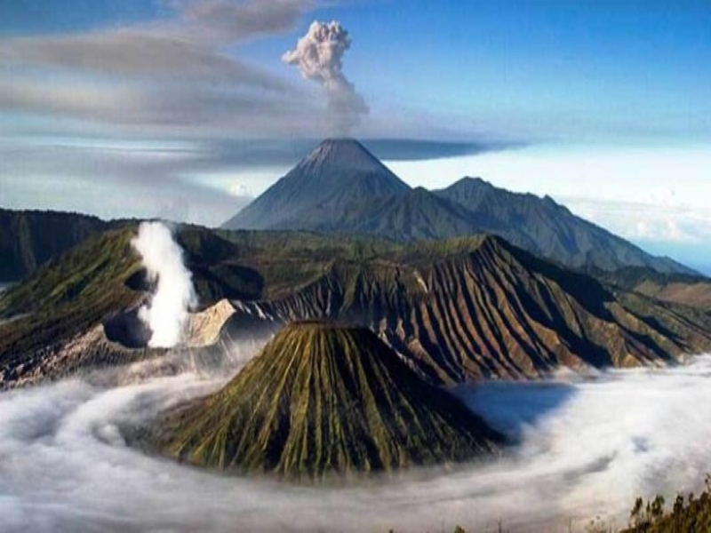
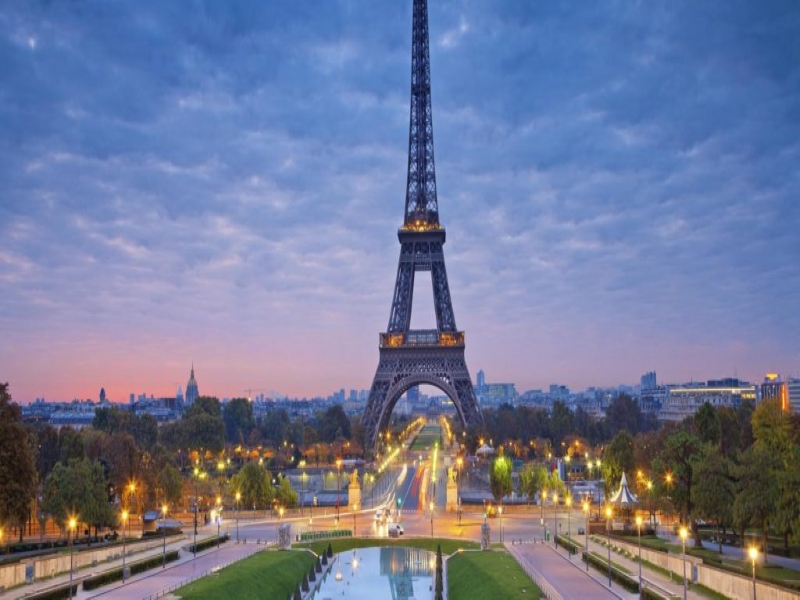

Gunung
List pertama saya adalah tempat yang paling ingin saya kunjungi yaitu gunung, disini saya infromasikan beberapa gunung yang ingin saya daki bersama kawan-kawan saya
Gunung Slamet
Gunung Slamet (3.428 meter dpl.) adalah sebuah gunung berapi kerucut yang terdapat di Pulau Jawa, Indonesia. Gunung Slamet terletak di antara 5 kabupaten, yaitu Kabupaten Brebes, Kabupaten Banyumas, Kabupaten Purbalingga, Kabupaten Tegal, dan Kabupaten Pemalang, Provinsi Jawa Tengah. Gunung Slamet merupakan gunung tertinggi di Jawa Tengah serta kedua tertinggi di Pulau Jawa setelah Gunung Semeru. Kawah IV merupakan kawah terakhir yang masih aktif sampai sekarang, dan terakhir aktif hingga pada level siaga medio-2009.
Gunung Slamet cukup populer sebagai sasaran pendakian meskipun medannya dikenal sulit. Di kaki gunung ini terletak kawasan wisata Baturraden yang menjadi andalan Kabupaten Banyumas karena hanya berjarak sekitar 15 km dari Purwokerto.
Gunung Rinjani
Gunung Rinjani adalah gunung yang berlokasi di Pulau Lombok, Nusa Tenggara Barat. Gunung yang merupakan gunung berapi kedua tertinggi di Indonesia dengan ketinggian 3.726 m dpl serta terletak pada lintang 8º25' LS dan 116º28' BT ini merupakan gunung favorit bagi pendaki Indonesia karena keindahan pemandangannya. Gunung ini merupakan bagian dari Taman Nasional Gunung Rinjani yang memiliki luas sekitar 41.330 ha dan ini akan diusulkan penambahannya sehingga menjadi 76.000 ha ke arah barat dan timur.
Secara administratif gunung ini berada dalam wilayah tiga kabupaten: Lombok Timur, Lombok Tengah dan Lombok Barat.
Gunung Semeru

Gunung Semeru atau Gunung Meru adalah sebuah gunung berapi kerucut di Jawa Timur, Indonesia. Gunung Semeru merupakan gunung tertinggi di Pulau Jawa, dengan puncaknya Mahameru, 3.676 meter dari permukaan laut (mdpl). Gunung Semeru juga merupakan gunung berapi tertinggi ketiga di Indonesia setelah Gunung Kerinci di Sumatra dan Gunung Rinjani di Nusa Tenggara Barat[1]. Kawah di puncak Gunung Semeru dikenal dengan nama Jonggring Saloko. Gunung Semeru secara administratif termasuk dalam wilayah dua kabupaten, yakni Kabupaten Malang dan Kabupaten Lumajang, Provinsi Jawa Timur. Gunung ini termasuk dalam kawasan Taman Nasional Bromo Tengger Semeru.
Semeru mempunyai kawasan hutan Dipterokarp Bukit, hutan Dipterokarp Atas, hutan Montane, dan Hutan Ericaceous atau hutan gunung.
Posisi geografis Semeru terletak antara 8°06' LS dan 112°55' BT.
Pada tahun 1913 dan 1946 Kawah Jonggring Saloka memiliki kubah dengan ketinggian 3.744,8 m hingga akhir November 1973. Di sebelah selatan, kubah ini mendobrak tepi kawah menyebabkan aliran lava mengarah ke sisi selatan meliputi daerah Pronojiwo dan Candipuro di Lumajang.
Kota
Konstatinopel
Konstantinopel (bahasa Yunani: Κωνσταντινούπολις Ko̱nstantinoúpolis, bahasa Latin: Constantinopolis, bahasa Turki Utsmaniyah: قسطنطینیه, bahasa Turki: Kostantiniyye atau İstanbul) adalah ibu kota Kekaisaran Romawi, Kekaisaran Romawi Timur, Kekaisaran Latin, dan Kesultanan Utsmaniyah. Hampir selama Abad Pertengahan, Konstantinopel merupakan kota terbesar dan termakmur di Eropa.[1]
Sekurang-kurangnya sejak abad ke-10, kota ini umum disebut Istanbul yang berasal dari kata Yunani Istimbolin, artinya "dalam kota" atau "ke kota". Setelah ditaklukkan oleh kaum Utsmaniyah pada 1453, nama resmi Konstantinopel dipertahankan dalam dokumen-dokumen resmi dan cetakan mata uang logam. Ketika Republik Turki didirikan, pemerintah Turki secara resmi berkeberatan atas penggunaan nama itu, dan meminta agar diganti dengan nama yang lebih umum, yakni Istanbul.[2][3][4] Penggantian nama tersebut diatur dalam Undang-Undang Pelayanan Pos Turki, sebagai bagian dari reformasi nasional Atatürk.[5][6] Istanbul berasal dari kata Stambol, yakni sebutan untuk Konstantinopel yang digunakan kaum Yunani dan Slavia dalam percakapan sehari-hari (Untuk penjelasan lebih lanjut, lihat Nama-nama Istanbul).
Konstantinopel terkenal karena pertahanannya yang sangat kuat. Meskipun dikepung beberapa kali oleh berbagai bangsa, kota Bizantium berhasil direbut hanya pada tahun 1204 oleh tentara Latin Perang Salib Keempat, dipulihkan pada tahun 1261 oleh Kaisar Bizantium Michael VIII Palaiologos, dan pada tahun 1453 ditaklukkan oleh Sultan Ottoman Mehmed II. Yang pertama, dinding kecil didirikan oleh Konstantinus I, dan mengelilingi kota. Kemudian, pada abad ke-5, Theodosius II membangun Tembok Theodosian, yang terdiri dari dinding ganda membentang sekitar 2 KM (1,2 mil) ke barat dari dinding pertama. Kota ini dibangun di atas tujuh bukit serta pada Tanduk Emas dan Laut Marmara, maka tersaji sebuah benteng yang tak tertembus melingkupi istana megah, kubah, dan menara, yang mencakup dua benua.
Paris

Paris (pengucapan: /ˈpærɨs/ dalam bahasa Inggris;[5] [paʁi] (bantuan·info) dalam bahasa Prancis) adalah ibu kota Prancis. Terletak di sungai Seine, di utara Prancis, di jantung region Île-de-France (juga dikenal sebagai "Region Paris"; bahasa Prancis: Région parisienne). Kota Paris pada batas administratifnya (tak berubah sejak 1860) memiliki penduduk 2.167.994 jiwa (Januari 2006).[6] Unité urbaine Paris (atau wilayah urban) memanjang ke luar batas kota administratif dan memiliki perkiraan penduduk 9.93 juta (tahun 2005).[7] Aire urbaine Paris (atau wilayah metropolitan) memiliki penduduk hampir 12 juta jiwa,[8] dan merupakan salah satu wilayah metropolitan terpadat di Eropa.[9]
Permukiman penting bagi lebih dari dua milenium, Paris hari ini menjadi salah satu pusat bisnis dan budaya terdepan di dunia, dan campuran politik, pendidikan, hiburan, media, fashion, sains dan seni semuanya membantu statusnya sebagai salah satu kota global terbesar di dunia.[10] Region Paris (Île-de-France) adalah ekonomi kota terbesar di Eropa, dan kelima terbesar dalam daftar kota menurut PDB dunia. Dengan €500.8 miliar (US$628.9 miliar), kota ini menghasilkan seperempat produk domestik bruto (PDB) Prancis tahun 2006.[11] Region Paris memiliki 36 dari perusahaan Fortune Global 500[12] di beberapa distrik bisnis, terutama La Défense, distrik bisnis terbesar di Eropa.[13] Paris juga memiliki banyak organisasi internasional seperti UNESCO, OECD, ICC dan Paris Club.
Paris adalah kota tujuan turis paling populer di dunia, dengan 30 juta pengunjung asing per tahun.[14] Terdapat sejumlah marka tanah terkenal di antara berbagai atraksinya, bersama dengan institusi terkenal dan taman terpopuler di dunia.
Tokyo
Tokyo (東京 Tōkyō, English /ˈtoʊkioʊ/,[6] bahasa Jepang: [toːkʲoː] ( simak); lit. "Ibu kota Timur"), nama resminya Metropolis Tokyo (東京都 Tōkyō-to), adalah salah satu dari 47 prefektur Jepang yang menjadi ibu kota Jepang sejak 1869.[7][8] Hingga 2018, Tokyo Raya menempati peringkat pertama sebagai wilayah metropolitan terpadat di dunia.[9] Tokyo menjadi tempat bertahtanya Kaisar Jepang, pemerintah Jepang, dan Parlemen Jepang. Tokyo mencakup sebagian dari wilayah Kanto, Kepulauan Izu, dan Kepulauan Ogasawara.[10] Tokyo dulunya bernama Edo ketika Shōgun Tokugawa Ieyasu menjadikan kota ini sebagai markas besarnya pada 1603. Kota ini berganti nama menjadi Tokyo setelah Kaisar Meiji menjadikannya sebagai ibu kota dan memindahkan tahtanya dari Kyoto pada tahun 1868. Metropolis Tokyo dibentuk pada tahun 1943 dari penggabungan bekas Prefektur Tokyo (東京府 Tōkyō-fu) dan Kota Tokyo (東京市 Tōkyō-shi). Tokyo sering kali disebut sebagai sebuah kota, padahal secara resmi Tokyo merupakan sebuah "prefektur metropolitan" yang sangat berbeda dari kota biasa dan menggabungkan unsur-unsur kota dan prefektur.
Pantai
Pantai Miami
Miami Beach adalah sebuah kota pantai di Miami-Dade County, Florida, Amerika Serikat. Kota ini didirikan pada 26 Maret 1915.[6] Pada sensus 2010, Miami Beach memiliki total populasi 87.779.[7] Kota ini telah menjadi salah satu sanggraloka pantai unggulan Amerika sejak awal abad ke-20.
Pantai Pandawa
Pantai Pandawa adalah salah satu kawasan wisata di area Kuta selatan, Kabupaten Badung, Bali. Pantai ini terletak di balik perbukitan dan sering disebut sebagai Pantai Rahasia (Secret Beach). Di sekitar pantai ini terdapat dua tebing yang sangat besar yang pada salah satu sisinya dipahat lima patung Pandawa[1] dan Kunti. Keenam patung tersebut secarara berurutan (dari posisi tertinggi) diberi penejasan nama Dewi Kunti, Dharma Wangsa, Bima, Arjuna, Nakula, dan Sadewa.
Selain untuk tujuan wisata dan olahraga air, pantai ini juga dimanfaatkan untuk budidaya rumput laut karena kontur pantai yang landai dan ombak yang tidak sampai ke garis pantai. Cukup banyak wisatawan yang melakukan paralayang dari Bukit Timbis hingga ke Pantai Pandawa.